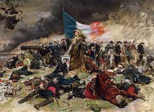
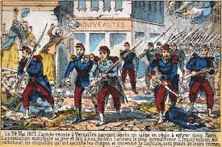
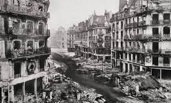

Background
The Demographics of France
There were stark differences between the industrial urban cities and the agricultural rural countryside. The rural countryside of France was filled with conservative farmers who controlled most of France's food production. The cities, on the other hand, were largely republican and more radicalised than the countryside, particularly in Paris, Lyons and Marseille.
Paris, in particular was one of the most industrialised countries in Europe. Half a million industrial workers lived in Paris alone. The vast majority of Parisians are working class people who had been exploited by their capitalist overlords for centuries, and were the exact demographic of people who inevitably overthrow their leaders.
The Franco-Prussian War
The Franco-Prussian War lasted from July of 1870 to January of 1871. It was a devestating loss for the French, with Napoleon III himself getting captured at the Battle of Sedan and Paris being shelled in September of 1870. In the more radicalised cities of France, this further fueled resentment of the status quo. The effects of the war on for the average Parisian were tremendous; as part of the surrender, France had to pay a 5 billion Franc indemity to Germany (between $USD342 billion - $USD479 billion in today's money).
The Revolt
The National Guard
Before the revolt, there were frequent demonstrations in Paris calling for democratic elections. After the Third Republic was instituted after Napoleon III's capture, there were fears in Paris that there would be a return to monarchy, and tensions were building between monarchists and the republican Parisians, particularly, the National Guard.
The National Guard was an army of volunteers that defended Paris during the Prussian seige. The National Guard was organised by the neighborhoods, as a result, there were many royalists serving in the Guard, and also many radical leftists. Many divisions were known for their lack of discipline, with some refusing to wear uniforms and not accepting orders without discussing them. Many divisions demanded to elect their own officers; these people became the bulk of the Guard.
Tensions in the city were rising quickly, so much so that there was an attempt to take over in October of 1880.
After the armistice was signed, tensions kept rising until it resulted with the National Guard seizing control of the government, including many buildings and weapons, on the 18th of March, 1871. This would mark the start of the Paris Commune.
The Policies of the Commune
After the National Guard took control of the city, they set up a Central Committee. The Central Committee was made up of 60 democratically elected councilors (called the Communards) made up of average workers, intellectuals, journalists and businessmen that would rule the city on behalf of the people. The Communards decided that the Commune would have no central leader and would make decisions by consensus.
The Communards began to implement many socialist policies that sought to even out the power of upper and lower classes of the society. They also abolished child labor, military conscriptuon and the death penalty. They ended nightime bakery work and handed out pensions to families who had lost a member defending the Commune. They abolished interest on debts and decreed that workers could take over a business if its owner abandoned it and banned employers from fining workers as a punishment.
The Commune governed with secular principals and passed many decrees that separated the church and the state. The council decided that religion was not to be a part of education, and that church property was to become public property.
The Council advocated for the establishment of other communes in France. Over the 2 month lifespan of the Commune, others were established in Lyon, Marseille and Saint-Etienne.
The Retaliation
The Third Republic was not idle during this time, the Commune was under constant attack by the French army from Versailles.
One of the main themes of the fighting would be the execution of POWs camptured with their weapons. It started with the shooting of captured National Guardsmen after they were caught with their weapons. Those originally shot by the Republic were those who were deserters of the general French army.
The Commune leaders were determined to take Versailles, where the Third Republic's government was based. They were convinced that members of the French Army would refuse to fire at the National Guard (as they did several times before). An army of 27,000 men were sent in 3 columns to attack Versailles, but were unsuccessful. Captured units caught with weapons were shot by the French Army.
By April, the French Army was approaching Paris, and there was debate over whether to prioritise the defence of the city or to try to achieve their political goals. The majority of the radical revolutionaries wanted military priority. The council ended up creating the unpopular Committee of Public Safety, which would imprison enemies of the Commune, normally on counts of treason or sharing intelligence with the enemy.
The French Army began to sytematically capture the forts outside the city throughout April and May. On the 21st of May, as the defence of the Commune became more desperate, he French army managed to storm the city and massacred tens of thousands of men, women and children, but they failed to capture the city until the 28th of May. This became known as Bloody Week; tens of thousands of people were killed in combat or executed and buried in unmarked graves.